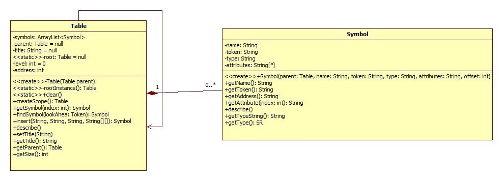
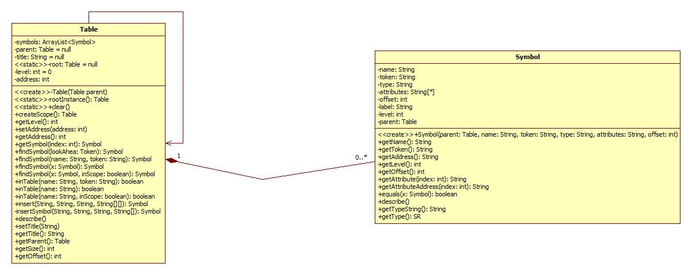

Compilers 2015
UML
As noted elsewhere, a clear outline was given to all teams for the design and implementation of the scanner, parser, and semantic analyzer. With approval, teams were allowed to vary their actual designs and implmementations. The scanner was the only module that required UML ahead of time. That is provided on this page along with the UML for the scanner as it actually was implemented.
Symbol Table UML (Before Coding)

After our initial design of the symbol table and its implementation, we realized we needed to add functionality to the symbol Table. For example, the runtime address offsets needed to be stored in the symbol table as well as well as the nesting level. Fortunately, our initial design only needed to be modified by adding attributes and methods to the Table class and the Symbol class. The basic design of symbol storage in the Table class and the recursive nature of the Table class did not need to be modified.
Symbol Table UML (Revised After Coding)
